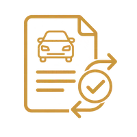
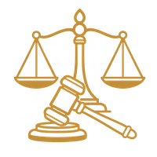
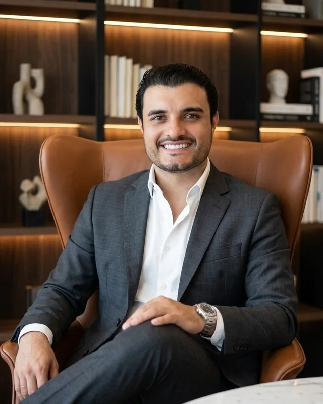

- Atendimento 100% online
- Especialista em Direito de Trânsito
- Atendimento em todo o Brasil
- Atendimento direto com o advogado
Escritório de advocacia especializado em trânsito
Se você precisa de auxílio jurídico para solucionar a suspensão ou cassação da sua CNH, se defender em blitz de bafômetro, crimes e outros assuntos de trânsito, nossos serviços são para você.
Os prazos de defesa nos processos administrativos de trânsito são curtos e não podem ser prolongados. Um descuido pode significar a perda do seu direito de dirigir por um longo tempo.
Quem age dentro do prazo de defesa tem mais chances de reverter a penalidade. Do contrário, a luta passa para a esfera judicial para manter seu direito de dirigir.
Pelo que vamos lutar por você
- {{CHECK}}Manter seu direito de dirigir livremente
- {{CHECK}}CNH ativa, sem pendências
- {{CHECK}}Anulação de procedimentos ilegais
São problemas comuns no trânsito

CNH suspensa ou cassada por pontos
Lei Seca e recusa ao bafômetro
Perda da CNH

Acidente de trânsito
Perda da permissão para dirigir (PPD)
Somos especialistas em superar esses problemas e lutar pelo seu direito de dirigir. Toque no botão e fale com o advogado pelo WhatsApp.

Dr. Mário Júnior
Advogado especializado em Direito de Trânsito, com atuação técnica e dedicada na defesa do seu direito de dirigir.
O atendimento é individualizado, com análise técnica de cada situação para identificar as medidas administrativas ou judiciais cabíveis.
- {{CHECK}}Lei Seca
- {{CHECK}}Recusa ao teste do bafômetro
- {{CHECK}}Suspensão da CNH
- {{CHECK}}Cassação do direito de dirigir
É possível manter sua CNH!
Se você recebeu uma notificação do órgão de trânsito e precisa de auxílio jurídico, toque no botão abaixo e solicite atendimento no WhatsApp. Nossa equipe está preparada para recebê-lo.